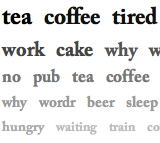

Wordr

- 
Originating as an obvious joke, Wordr was a Twitter clone with a new limitation: you could only post one word at a time. There's no stopping some people though, and we soon discovered that one word could say a lot.
The rules of the site evolved gradually. Word length was limited to 28 characters (the length of antidisestablishmentarianism), and could be optionally followed by a question or exclamation mark. The addition of the ability to respond to other people's words enabled new games of verbal ping pong.
A vocabulary cloud surfaced some of the interesting words people were using (often neologism and portmanteaus), although pleasingly 'tea' remained firmly at the top of the charts.
The site attracted attention far and wide, and was even featured on TV as part of the BBC's Click programme.
Wordr is now retired.